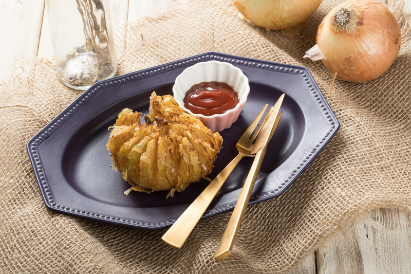

玉ねぎのまるごとフライ

材料 1人分
- 玉ねぎ
- 1個
- 米粉
- 大さじ1/2
- A 米粉
- 30g
- A 片栗粉
- 20g
- A 醤油
- 小さじ1
- A ベーキングパウダー
- 小さじ1/2
- A 水
- 80ml
- B トマトケチャップ
- 大さじ2
- B 醤油
- 小さじ1
- B タバスコ
- 小さじ1/4
作り方
1
玉ねぎは皮をむき、16等分に切り込みを入れたら米粉をまぶします。
2
Aを混ぜて玉ねぎに絡めたら、180度に熱した油できつね色になるまで揚げます。
3
器に盛り、Bを混ぜて添えます。